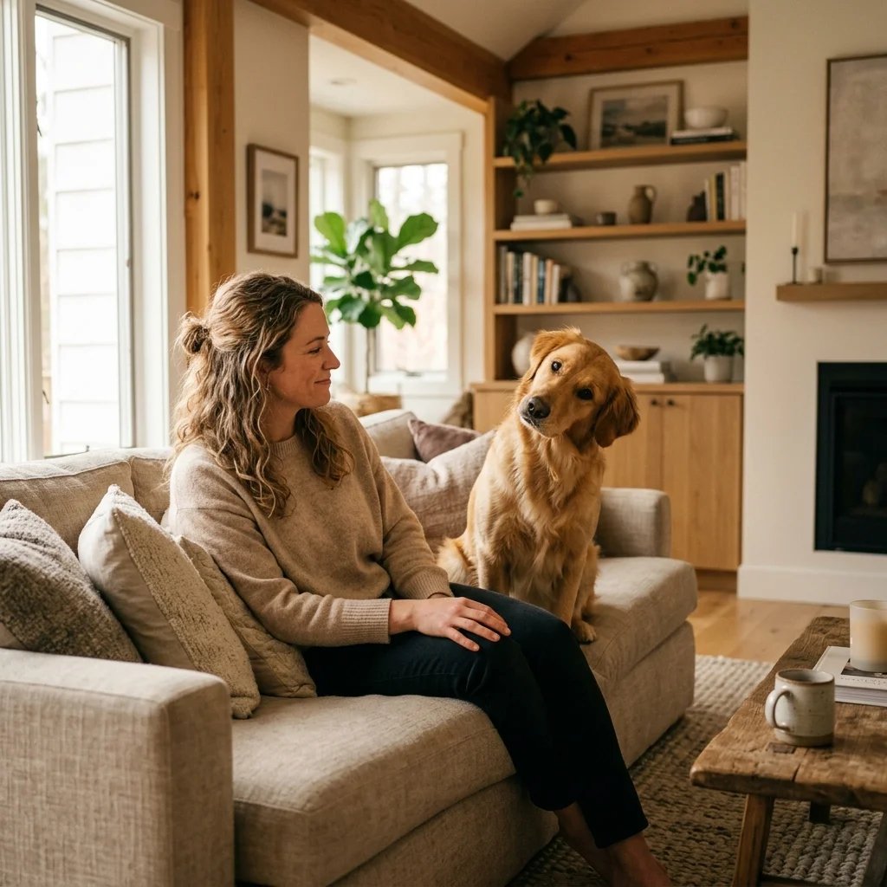
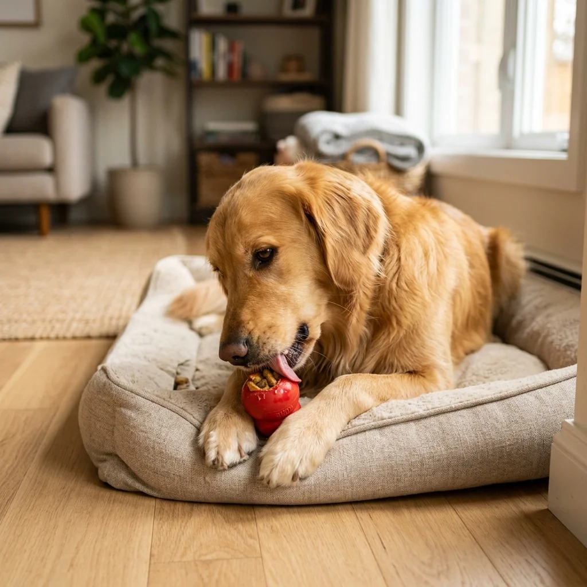

Errores comunes al tener un perro por primera vez y cómo evitarlos
Es normal querer ser el tutor perfecto, pero en ese camino es fácil caer en ciertos errores primer perro que, aunque se cometen con la mejor intención, pueden afectar el desarrollo emocional de tu mascota.
Entender que tu perro no intenta "dominarte", sino comunicarse contigo, es el primer paso para una convivencia feliz. A continuación analizamos los 5 fallos más frecuentes y cómo darles solución con base en la ciencia del comportamiento.

Esperar demasiado para la socialización
Muchos tutores creen que su perro no debe salir ni ver a otros animales hasta tener todas sus vacunas. Si bien la seguridad sanitaria es vital, el periodo crítico de socialización termina alrededor de las 14 semanas. Aislar por completo a un cachorro puede derivar en miedos crónicos y agresividad por falta de exposición.
Cómo evitarlo:
Consulta con tu veterinario para realizar una socialización segura. Llévalo en brazos a lugares concurridos, deja que vea a perros sanos y vacunados en entornos controlados, y exponlo a ruidos y texturas de forma positiva antes de que cierre su ventana de aprendizaje.
El uso de métodos de castigo o "dominancia"
Uno de los errores primer perro más dañinos es creer en la teoría de la dominancia. La ciencia moderna recomienda evitar collares de pinchos, de choque o correcciones físicas. Estos métodos aumentan el estrés, dañan el vínculo y no enseñan al perro qué debe hacer, solo qué no hacer bajo miedo.
Cómo evitarlo:
Utiliza exclusivamente el adiestramiento basado en recompensas (refuerzo positivo). Premia las conductas que te gustan y redirige las que no. Esto crea un perro con confianza que disfruta aprendiendo contigo.
No fomentar la independencia desde el inicio
Es tentador pasar las 24 horas pegado a tu nuevo compañero. Sin embargo, no enseñarle a estar solo puede desencadenar ansiedad por separación. Los perros necesitan aprender a entretenerse solos para evitar que el pánico se apodere de ellos cuando te vas.
Cómo evitarlo:
Establece "tiempos de inatención" incluso cuando estés en casa. Dale un juguete de ocupación en su zona de refugio y sal de la habitación por periodos cortos, regresando solo cuando esté tranquilo.

Descuidar la medicina preventiva y la higiene dental
Muchos tutores solo van al veterinario cuando el perro parece enfermo. Además, se suele pasar por alto el cepillado dental, pensando que "el mal aliento es normal".
Cómo evitarlo:
Programa chequeos rutinarios (al menos una vez al año) y comienza a cepillar sus dientes desde cachorro. Recuerda que muchas enfermedades son invisibles en sus primeras etapas y la prevención es mucho más económica y humana que el tratamiento.
No establecer una rutina predecible
La incertidumbre genera ansiedad. No tener horarios claros para la comida, los paseos y el juego es un fallo común que deja al perro en un estado de alerta constante.
Cómo evitarlo:
Crea un horario fijo para comida, paseos y juego. La previsibilidad le permite a tu perro relajarse, ya que sabe exactamente cuándo sus necesidades básicas serán cubiertas.
Comparativa: entrenamiento de recompensa vs. castigo
| Método | Resultado Inmediato | Efecto a Largo Plazo | Vínculo |
|---|---|---|---|
| ✅ Refuerzo Positivo | Aprende qué conducta paga | Perro seguro y motivado | Basado en confianza |
| ❌ Castigo / Aversivos | Suprime la conducta por miedo | Posible agresividad o apatía | Basado en miedo |
Fuente: AVSAB Position Statement on Humane Dog Training.
Preguntas Frecuentes (FAQ)
¿Por qué mi perro no me hace caso si no tengo premios?
Probablemente porque aún no has generalizado la conducta o el entorno es demasiado estimulante. El premio es el "salario" inicial; con el tiempo la conducta se vuelve un hábito.
¿Es malo que mi perro duerma conmigo?
No es malo en sí mismo, pero si tu perro no sabe dormir solo en su propia cama, podrías estar reforzando una dependencia excesiva que dificulta su autonomía.
¿Cómo sé si mi perro tiene ansiedad por separación?
Si al irte vocaliza, destruye objetos o hace sus necesidades en casa, y al volver te saluda de forma frenética, es probable que sufra ansiedad por separación.
¿Puedo educar a un perro adulto adoptado?
¡Absolutamente! Los perros adultos pueden aprender con refuerzo positivo igual que los cachorros, aunque a veces requieren más paciencia si tienen experiencias previas difíciles.
¿Qué hago si mi perro muerde los muebles?
Proporciónale alternativas adecuadas para masticar (juguetes de caucho duro) y asegúrate de que esté recibiendo suficiente estimulación mental y física diaria.
¿Es necesario castigar al perro si se orina dentro?
No. El castigo solo le enseñará a tenerte miedo al orinar. Limpia sin que te vea y prémialo efusivamente cuando lo haga en el lugar correcto.
¿Quieres evitar estos y otros fallos que complican la convivencia?
En nuestro libro "Tu Primer Perro" profundizamos en la psicología canina y te damos herramientas prácticas para educar a tu mascota con amor y ciencia. ¡Haz que vuestro vínculo sea irrompible desde el primer día!
Explorar guía completa arrow_forward